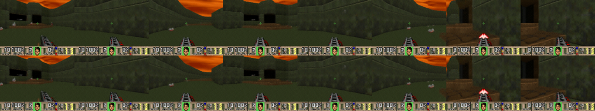

Making a world model play Doom

browser play — every frame generated by the model from keyboard and mouse, no engine in the loop
MIRA retrained on Doom deathmatch footage and served until it's playable in a browser. Code here.
It works: a 75k-step single-player world model, 35 fps on one GPU, real-time paced. The hard parts were the data conversion, a fixed training budget with something silently eating it, and drift.
Two of the largest serving wins were deletions. An attention call in all 28 decoder blocks was provably the identity function and cost a fifth of the frame; a causal mask was entirely True and was silently disqualifying the fast SDPA backends. Both fall out of the sequence length being 1 at play time.
MIRA
Frozen DINOv3-L/16 autoencoder into latents, ~1.19B latent diffusion transformer generating the next latent frame from the past frames plus actions, flow matching with diffusion forcing. Released model plays 4-player Rocket League at 20 fps on one GPU. Paper.
I didn't touch the architecture. Three details recur below: the codec does 2× temporal downsampling, so one latent step is two video frames; only every 4th block has temporal attention and therefore a KV-cache; and diffusion forcing is what makes inference-time drift control possible at all.
Dataset conversion
chrisxx/doom-2players-mp4: ~2,600 episodes, 167 hours, 21M frames at 480×640 @ 35 fps, two synchronised perspectives each. Different tar layout, no index, so preprocess_doom.py converts it. Four decisions mattered.
Chunk length 160. Divisible by both the single-player (40) and multiplayer (80) clip lengths, so no frames get stranded at boundaries.
Action mapping. Doom's 14-dim vector becomes 13 binary key channels plus one continuous mouse-turn channel. This defines the input distribution the model expects at play time, and the worst play-time bug I hit came from the client violating it — see below.
384×512, fps stays 35. The codec wants input divisible by 32. 384×512 keeps Doom's 4:3 rather than squashing to the released 288×512, and avoids the token cost of native res. 35→20 isn't an integer action stride, so nothing is retargeted — which is why real time later means 17.5 model steps a second.
Strided subset, not a prefix. The binding constraint is training steps, not data — 160 of 1,320 shards is already more clips than the run will see. Take every 8th shard so the subset spans the whole capture rather than one slice of it.
Training
Order is forced: codec first (the world model trains on its frozen latents), then single-player, then a multiplayer warm-start if budget allows. Each of the two perspectives is its own training row, so 167 hours becomes ~334 hours of single-player clips.
Everything ran on 2×H100 under a fixed budget. Paper-scale is 60k codec / 250k world-model steps; this run is a fraction of that, and the playable checkpoint is 75k steps. That gap is why the rest of the post is inference-time work. Both stages were overfit on a handful of real clips first — codec 1.6 → 0.2, world model 11 → ~1.4 — as a wiring check.
bf16 autocast, TF32 matmuls, fused AdamW, run.compile=true (~1.6×), activation checkpointing on the multiplayer wrapper. None of that is interesting. What actually shaped the run was memory and a silent waste of a third of it.
Memory sets the batch size, not throughput
The codec is the memory-heavy stage, and not because of the backbone — it's the LPIPS pass, which at 384×512 × 40-frame clips spikes hard enough to decide the whole configuration. Batch 4 fits an 80 GB H100 with PYTORCH_CUDA_ALLOC_CONF=expandable_segments:True; batch 8 OOMs. Without expandable segments it fragments and dies lower than that.
The lever if you want a bigger batch is encoder.video.timesteps: dropping 40 → 24 frames per clip buys the headroom back. I kept 40, because the codec's temporal stride is what the world model inherits and I didn't want to shorten the clip the codec learns to reconstruct. The world model is lighter per clip — no LPIPS, no full-res decode in the step — and starts at batch 8.
Resolution is constrained from below too: divisible by 32 (DINOv3 patch 16 × spatial bottleneck stride 2), which is what makes 384×512 the smallest 4:3 option that doesn't distort geometry.
Where the step time goes
| stage | s/step | s/clip | what's in the step |
|---|---|---|---|
| codec | 2.1 | 1.05 | DINOv3-L encode + ViT decoder + LPIPS + DINO-consistency |
| WM single-player | 1.55 | 0.78 | includes the codec encode every step |
That last cell is the one that matters. The world model's step re-runs the frozen DINOv3 encode on the clip every iteration — a forward pass through a model that will never update, producing latents that are deterministic here (noise_tau=0, use_codec_posterior_mean=true). Precomputing them once is lossless, not an approximation, and worth ~1.5–1.8× on both world-model stages. On this run that's the difference between ~200 and ~110 GPU-hours for single-player alone.
I didn't do it, and the only defensible reason is that a latent cache is pinned to one codec checkpoint and the codec was still moving. If I ran this again it would be the first thing in, before the first world-model step.
Scheduler state in the checkpoint
The expensive one. PyTorch's scheduler state_dict() serialises every instance attribute, so MIRA's cosine schedule persists decay_steps into the checkpoint, and resuming restores it — silently overriding the config. Raise the target from 32k to 100k and the LR still anneals to the floor by 32k, then sits flat for 68k steps you paid for. The loss curve doesn't scream; it looks like a plateau.
Fix is run.finetune_from=<checkpoint>: weights only, fresh optimizer and schedule. The wrong fix is wiping the run directory, which also works and which I did once first, at a cost of ~5,000 world-model steps.
Codec stopping criterion
The codec's loss terms are auto-weight-balanced, so the total is deliberately not a progress signal — read the components, and stop on reconstruction metrics. Game frames plateau in the low 30s dB; once PSNR stops moving across a few straight validations, the remaining budget belongs to the world model.
The largest lever I didn't pull: caching the frozen codec's latents. Every world-model step re-encodes the clip through a frozen, deterministic encoder (noise_tau=0, use_codec_posterior_mean=true), so precomputing once is lossless and worth ~1.5–1.8× on the world-model stages.
Drift
Every generated frame becomes context for the next through the KV-cache, so error compounds: PSNR against a reference trajectory falls from ~30 dB to ~18 over 60 generated frames. Retraining wasn't on the table at this budget, so everything here is inference-time.
Context noise
Inject noise into the context frames and the model ignores fine detail that is probably its own error. On the original 2-diffusion-step config, 0.45 flattened the drift slope by about a quarter and lifted far-horizon PSNR at no cost.
After the serving pass bought 6 steps instead of 2, 0.45 actively hurt. At 2 steps the latents are noisy and context noise is damage control for noise already present; at 6 they're clean and added noise only destroys usable detail. Re-swept, the optimum is 0:

HUD survival at 150 steps, 3 clips × 2 seeds per cell. 0.00 → 0.667 mean · 0.15 → 0.540 · 0.30 → 0.044 · 0.45 → 0.026 (collapsed 6/6)
A tuned inference constant belongs to a configuration, not to a model. Anything carried across a serving change is a hypothesis.
Drift metric
The sweep needed a metric that can't be gamed. Frame sharpness ranked a fully melted frame as the best output, because it rewards high-frequency garbage. What works is HUD survival: the status bar is a fixed high-contrast structure the model renders crisply on-distribution and smears as it drifts, so correlation against its own initial appearance measures drift resistance directly.
These rollouts are chaotic — cuBLAS reductions are non-deterministic and autoregression amplifies any epsilon. The same config scored 150 and 36 on consecutive single runs. Six runs per cell above and the spread is still visible; a single-run A/B here is meaningless.
Soft re-anchoring
The strongest tool for continuous play and the one I'd make default next. Rather than reseeding from a different real clip (kills drift, jumps the scene), re-ground the model to its own current frame: decode the latest latent to pixels, re-encode through the frozen codec, rebuild the context from that. The codec is deterministic, so the round trip snaps the latent back onto the manifold without changing the visible scene.
Diffusion steps: 6 beats 8
More steps should mean cleaner latents and less drift. Measured, 8 is worse than 6 — not just slower, worse.

same context noise: the 6-step rollout survives the full horizon, the 8-step one breaks before halfway
No clean mechanistic story — working hypothesis is that longer denoising trajectories at low context noise commit small errors into the latent with more confidence and autoregression does the rest. Convenient either way: 6 is both the fastest setting inside the frame budget and the best-scoring one.
Serving
The first interactive version ran at ~1 fps. The final one runs at 35 with 6 diffusion steps on a single RTX PRO 6000 (sm_120), real-time paced, and delivers the same 35 to a browser on another continent.
One GPU worker thread owns the model, the KV-cache and the CUDA graph — warmup, capture and every step on the same thread, since graphs can't be replayed from a different thread than captured. The worker generates continuously from the current action and the handler returns the latest finished frame; the original design generated per request, which is the 1 fps. JPEG encoding is on-GPU, so frames leave as tens of KB rather than a ~600KB pixel copy. gc.freeze() after warmup, because GC pauses were dropping the frame rate to single digits.
CUDA graph
The lever from ~11 fps to 24+. torch.compile can't take the denoiser (data-dependent control flow), and the stock streaming path grows its KV-cache with a torch.cat every step, which is fatal against fixed addresses. The steady-state step is reimplemented with four invariants:
- latent and KV-cache in fixed buffers, updated in place (roll + copy, never realloc);
- all randomness from static noise buffers filled outside the graph — miss this and the graph replays identical noise, so the picture freezes while the fps counter looks healthy;
- only the steady-state path captured, with warmup pre-populating the cache so the first-call branch never runs inside the graph;
Nonecache slots for the non-temporal-attention layers, and the bf16/fp32 autocast boundary at the decoder, handled explicitly.
Frame breakdown
Profiling the graphed step contradicted the obvious guesses — not the attention kernels, not the transformer:
| component | cost | share of a 47 ms frame |
|---|---|---|
| codec ViT decoder | 26.0 ms | 55% |
| DiT forward × (steps + 1) | ~6.2 ms each | ~40% |
| action encode | 0.4 ms | 1% |
The +1 is diffusion-forcing bookkeeping: the denoised latent is re-noised to the context noise level before entering the cache. Inside the decoder one kernel dominated — fmha_cutlassF, 28 calls per frame at ~370 µs. Twenty-eight is exactly the decoder's depth.
Identity attention in the decoder
The decoder runs causal temporal attention over the frame axis. Interactive play decodes one latent frame at a time, so it runs with a single key in all 28 blocks — and softmax over one key is 1, making the output identically v. Bit-exact: subtract v and the max abs diff is 0.0.
Not free, though. At (768 batch, 16 heads, head_dim 72, seq 1) the memory-efficient kernel tiles that shape terribly: ~375 µs against ~4 µs for a copy. attend() now short-circuits the single-key case, broadcasting KV heads for GQA, verified bit-identical against the SDPA reference across head counts, GQA ratios and both causal settings. Decode 30 → 19 ms.
Any streaming video model whose codec has temporal attention is probably paying this right now.
All-True causal mask
With one query and unbounded context the causal mask is entirely True. Passing any explicit mask knocks SDPA onto the slow cutlass path, and that shape is what every streaming step uses, on all five temporal-attention layers, on every diffusion step. Skipping it when vacuous (a bounded window is a real mask and still gets built) agrees with the masked reference to one bf16 ULP and is worth ~6 ms a step.
Neither of these is faster attention. Both are recognising attention that computes nothing.
Compilation
The rest of the decoder was ~1,700 kernels per decode at 2–4 µs each — launch-bound, which Inductor eats. It gets max-autotune-no-cudagraphs; the suffix is required, since Inductor's cudagraph wrapper fights the manual graph. Decode 19 → under 9 ms.
Compiling the DiT is the trap: in eager it helps (48 → 36 ms), under the manual graph it regresses (29 → 32 ms). The graph already removed the launch overhead compilation buys, and Triton GEMMs lose to cuBLAS at these shapes (192 tokens, hidden 2048). It stays uncompiled.
Two frames per step, and pacing
decode_to_video returns (1, 2, 3, 384, 512) for a single latent — two video frames, both already paid for. The loop was discarding one. Publishing both doubles the delivered frame rate for zero compute.
With the step fast, generating flat-out is the wrong target: each step advances two frames of a 35 fps game, so real time is 17.5 steps/s — a 57 ms budget, and exceeding it runs the world in fast-forward. The worker paces to that grid, absorbing slow steps into the next slot and resyncing rather than sprinting if it falls behind. Surplus speed goes into steps per frame.

six is the last setting comfortably inside the budget; seven lands exactly on it with no slack for encode or a hiccup
Transport and reseeding
Client-pull costs a round trip per frame, so delivered throughput is PIPELINE / RTT — a distant browser got ~7 of the server's 21 fps. Pushing over a WebSocket into a small jitter buffer (start at 3 frames, drop oldest above 10) and drawing on a 35 fps clock makes displayed rate independent of latency: measured identical on localhost and through a proxy an ocean away, ~22 KB a frame.
Reseeding used to invalidate the capture, so resets meant a ~30 s recapture or nothing. Reseeding through the eager path onto temporaries and then copying values into the graph's existing buffers keeps shapes fixed and the graph valid — verified by object identity on the latent and every cache entry. That also fixed a real defect: one persistent player generating from container start meant a browser connecting ten minutes later inherited ten minutes of drift.
Action distribution at play time
The most instructive bug. Weapon select did nothing. The model was fine; the client was feeding it actions from a distribution it had never seen.
Measured over 274 seconds of the training split: exactly one weapon bit is ever set — frames with two simultaneously, zero. Weapon presses are short, median 2 frames. The run key is on nearly 90% of frames, so running is the default state, not a modifier.
The client latched a weapon bit on forever once pressed, far outside anything in training. Fixes follow from the measurements: latching moved server-side, capped at one weapon, holds expressed in model steps (2 for weapons, min 3 for attack, 6 on switch) rather than client frames — the browser samples at 60 Hz while the model consumes 17.5 actions/s, so "hold for 8 frames" had no fixed duration in model time. Mouse movement accumulates between steps instead of overwriting; the old path overwrote at 60 Hz and drained once per step, discarding ~two thirds of every flick. Sensitivity 0.6 → 0.22, because 0.6 saturated the ±12 per-step turn clamp on any real drag, and that clamp is the range the training data lives in. The input panel echoes what the server consumed, not what the browser sent.
The inference-time input contract is part of the model. Latches, durations, units and simultaneity that the client synthesises outside the training distribution are adversarial input regardless of how reasonable they look in a UI.
Negative results
Long-context finetune. wm_long, 13k steps at double the window, takes memory from ~1.1 s to ~2.2 s for +3 ms a step, and the base model can't be stretched instead — trained at 40 timesteps, 38 or 39 context frames still floor to the same 19 latents. It isn't the default because it traded action adherence for stability: it fires without input and ignores weapon select. More coherent world, less responsive game.
Action CFG. 10% action dropout in training means a genuine unconditional mode, and the null-action embedding reconstructs exactly (dropout tokens substituted after temporal pooling, so joint_mlp([mouse_dropout_token, keyboard_dropout_token]) reproduces it bit-for-bit). It degrades output: at 1.5 the HUD smears and the scene blocks up, at 2.5 it collapses. The unconditional mode is too weakly trained to extrapolate against.
SageAttention-3. Rebuilt from an empty checkout on an RTX 5090: 58.2 ms/step against the 57.1 ms budget, ~1 ms over, 35.1 fps delivered. Being 1 ms over is exactly when FP4 attention sounds like the answer, so:
| attention site | shape | µs/call | ms/step | eligible? |
|---|---|---|---|---|
| DiT spatial (16 layers × 7) | q(1, 192, 16, 128) | 26.1 | 2.93 | dim ok, S=192 |
| DiT temporal (5 layers × 7) | q(192, 1, 16, 128), kv=20 | 26.7 | 0.93 | no — q_len=1 |
| codec decoder spatial (28) | q(1, 768, 16, 72) | 39.0 | 1.09 | no — head_dim 72 |
All attention is 3.2 ms of 58.2 — 5.5%. The latent grid is 12×16, so S=192, not 4096. A 192×192 attention and a 1×20 decode cost the same 26 µs, which is launch overhead, and the graph already removed it. Free attention would give 58.2 → 53.2 ms, i.e. 34.4 → 37.6 fps, and more fps isn't the goal. Sage supports head dims 64 and 128; the most expensive call here is 72. GEMMs are ~56% of CUDA time — that's where FP4 would pay.
Episodic memory (WorldKV)
The window is 19 latent frames, 1.09 s. Older frames aren't attenuated, they're gone. WorldKV: archive the KV of evicted frames in a bank keyed by the pose that generated them, and swap the best matches into a reserved slice of the window each step. No retraining, same window size.
Three properties made it cheap to try here. RoPE is applied after the cache concat, so archived keys are stored un-rotated and a retrieved frame adopts its slot's position — the "rewrite positional timestamps" step is free. The cache is already fixed-address buffers mutated in place. And no change to the captured step was needed: the in-graph slide is k_buf[:, :-1] = k_buf[:, 1:], so overwriting slots [0, R) after each replay gives exactly the reserved-slice semantics.
There's no camera pose, so the cue is dead-reckoned from the mouse-turn channel — which required knowing what a turn unit is worth. Doom renders 90° horizontal FOV, so one revolution scrolls the image four screen widths; regressing per-frame horizontal shift (1-D cross-correlation, pure-rotation frames only) against turn gives 5.731 px/unit, r = 0.966 → 1 unit = 1.0075°, one revolution = 357.3 ≈ 360. It's degrees. My prior was BAM/102.4, which would have put a revolution at 640 — a silent 1.8× error in the only quantity retrieval depends on. Correlating whole frames against cumulative turn gave a flat curve first, because the player translates while spinning.
One archived latent frame is 1.97 MB (only 5 of 16 layers cache), so 8 GB buys 232 s of memory, and scoring touches only the yaw metadata. A/B on look-away-dwell-look-back, 2.29 s away against a 1.09 s window, paired over 8 clips × 2 seeds:
| condition | return-consistency | Δ vs off | paired wins |
|---|---|---|---|
| off | +0.476 | — | — |
| R=2 of 19 slots | +0.495 | +0.019 | 10/16 |
| R=4 | +0.491 | +0.015 | 8/16 |
| R=8 | +0.474 | −0.001 | 8/16 |
Paired sd 0.042, so the best case is ~1.8σ, and in a separate run the sign flipped. No effect.
The diagnostics rule out the boring explanations: mean |Δyaw| at retrieval was 0.0° and memory was pinned in-window on 31% of steps. The right frames were retrieved and inserted; the model didn't act on them. They land at the oldest RoPE positions where 15+ contiguous recent frames outvote them, and every reserved slot costs a working-memory slot 1:1 — which is what the monotone decay from R=2 to R=8 is. WorldKV's setting is an 8 s window where retrieved chunks displace a much smaller share of context.

a full 360° spin — top: memory off, bottom: on
Two mistakes worth more than the result. Temporal non-maximum suppression suppressed exactly the right candidates: frames matching a given yaw are consecutive frames of one sweep, so an 8-step spread constraint rejected all but one and filled 0.08 of 4 slots. And the codec's batch preprocessing does batch.video = batch.video / 255.0 in place, so seeding a second player from the same clip divides an already-normalised video by 255 again — the "on" condition looked broken when it was just the third player built from one batch. The server pulls a fresh clip per player and never hits it; a harness that pins the clip across conditions always will.
Limitations
Drift on long rollouts. Everything above pushes the melt back, nothing removes it. Minutes-long coherent play needs soft re-anchoring or periodic reseeds; the real fix is more training.
Memory vs adherence. wm_long remembers twice as long and listens less. I don't have a configuration with both, and I suspect the answer is a longer base run at the bigger window rather than a finetune.
Single player. One persistent player backs the CUDA graph, so multiple browsers share a world, and the 2-player stage is still queued behind budget.
The playable checkpoint is 75k steps against a 250k recipe, and most of what's wrong with it is undertraining rather than architecture. If you have compute to spare and want to see a properly trained version, reach out :) The roadmap is cheap to verify: cache the codec latents, take single-player to 250k, then the 40k warm-started 2-player finetune.
Appendix / reproducibility notes
- Base: MIRA, architecture unmodified. Codec: frozen DINOv3-L/16, temporal stride 2, 28-layer ViT decoder (width 1152, patch 16, patch_size_t 2). WM: ~1.19B DiT, hidden 2048, 16 layers, temporal attention every 4th, GQA 16q/4kv, head_dim 128.
- Data: chrisxx/doom-2players-mp4, ~2,600 episodes / 167 h / 21 M frames → 384×512 @ 35 fps, chunk-len 160, 13 keys + turn-delta → mouse. Every 8th shard, 160 of 1,320.
- Trained: 2×H100, fixed budget. Codec early-stopped on PSNR plateau; single-player WM 75k; long-context finetune 13k. Paper-scale reference 60k / 250k / 40k. FA3 built from source (no wheels ship);
MIRA_ATTN_BACKEND=fa3so a bad build fails at startup instead of degrading to SDPA for days. - Serving (RTX PRO 6000, sm_120): 6 diffusion steps, context noise 0.0, 19 context latents, step 47 → 29 ms (1.65×), 35 fps paced, VRAM 11.5 → 19.5 GB. RTX 5090: 58.2 ms/step, 35.1 fps, 15.7 GB.
- Rejected: compiling the DiT under the graph (29 → 32 ms); 8 diffusion steps (slower and worse); action CFG; SageAttention-3; WorldKV (+0.019, ~1.8σ).
- Open: drift at 75k steps — indicated fix is more training, with cached codec latents making it ~1.5–1.8× cheaper.